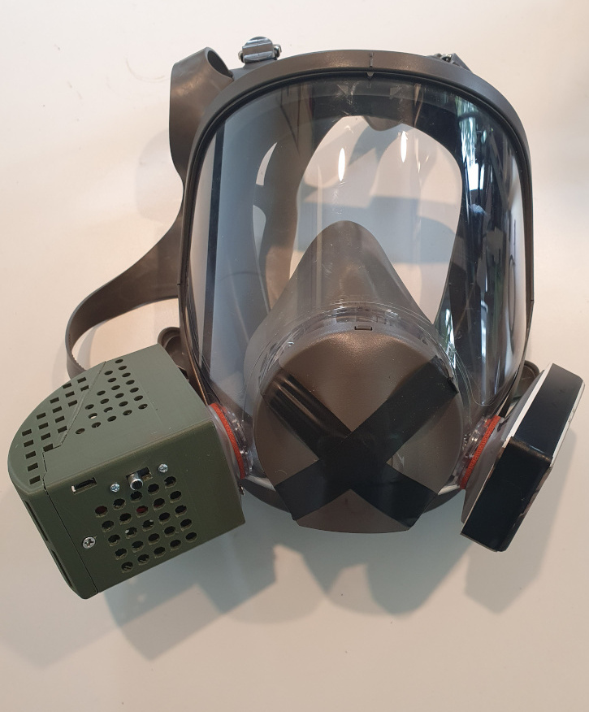

Q-Prop Creations
Respirator Fan
A 3D printed fan and battery housing that uses one of the disposable respirator filters as it's base. Forces fresh air into the vision part of the mask to stay fog free.
The fresh air flow into the breating area through the respirator one way valve.
